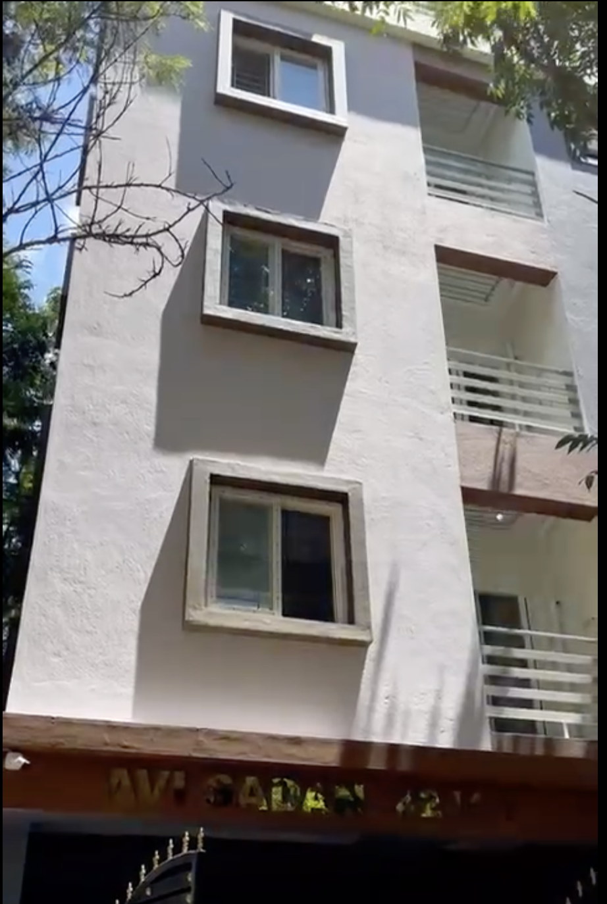

AVI SADAN

Building Overview
- Eleven 1 BHK Flats
- Five 1 RK Flats
- Walkable from Hope Farm Junction and Kadugodi Metro
- Modern and Good Interiors with All Standard Fittings
- Safe, Secure, and Family-Oriented Residential Neighborhood
- Prime Location and Close to IT Companies, Malls, and Supermarkets
- Very Close to Whitefield Employment Hub
- Renowned Residential Layout with Nice Roads for Long Walks
- Security, Power Backup, Lift, CCTV, 24 Hrs Water, and Parking
AviSadan #244/1, 6th Main, Maithri Layout, Kadugodi, Whitefield, Bengaluru, Karnataka 560066